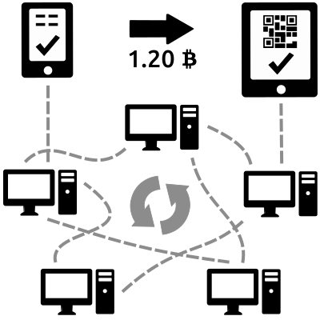

Verifying the Chain


A blockchain is essentially just a record of digital events — one that’s “distributed” or shared between many different parties.
This record is a distributed database over a peer to peer network which is constantly growing.
The record is a public ledger on which the entire Bitcoin network relies.
It has all confirmed transactions that ever happened on the network.
Each new block contains:
One way functions (e.g. cryptographic hashes like SHA256) Computationally cheap to verify.
Expensive to get the input back from output
Computationally expensive limits the number of new blocks
Not relying on timestamp itself or any numerical sequence for order
Instead, verify our one way function.
In event multiple block 52s announced, network prefers longest valid chain after 52.
More computationally expensive to get ahead of network than to generate new blocks honestly.
decentralized network confirms that a contract of any kind was executed properly
doesn't reveal any confidential information about the parties or the transaction
Because of this, not only can we extend bitcoin, we can create a variety of services on top of the blockchain.
Think DNS, HTTP, reddit/twitter/facebook, etc
Permissionless - no 'trusted party' required in order to participate
Decentralisation - no single point of failure in the system
Privacy - pseudonymous, no need to disclose personal information to authenicate/verify
Bank Of Ireland - successful trial (April 2016)
Eestipank (Bank of Estonia, estonia has lowest card fraud rate in Eurozone)
Ethereum is a good start
The startup has written a web app and programming language to define contracts (open source)